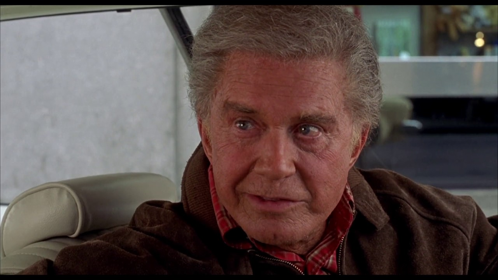
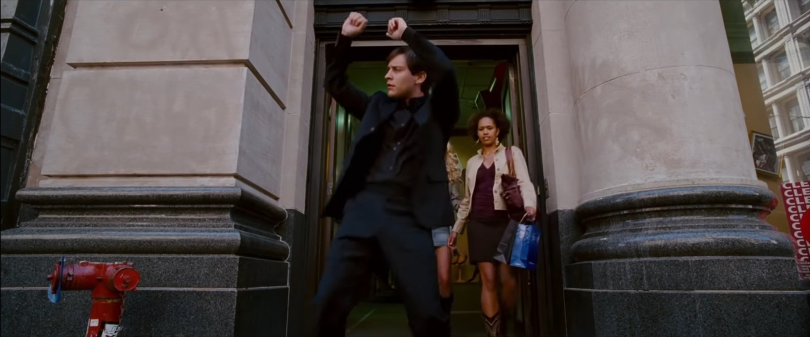
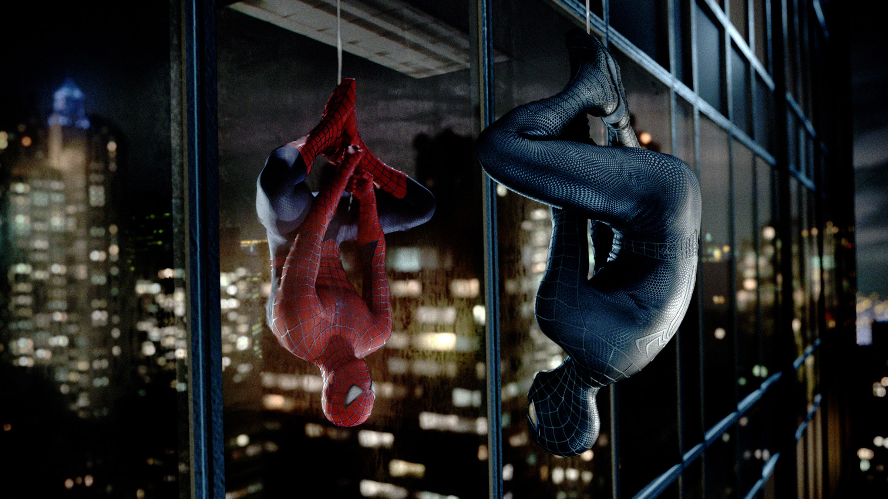

Что не так с document outline?
Андрей Волынкин
PiterCSS_meetup №26 / 2018
Кто я?
Андрей Волынкин
- Разработчик интерфейсов в Яндекс
Команда Яндекс.Трекера
- Преподаю в Университете ИТМО
- Люблю семантику
Disclamer
HTML5 Outline не реализован в браузерах и инструментах доступности!
Зачем это всё?
- Используйте заголовки
- Используйте семантические теги
- Распространяйте знания
Document outline
- Улучшения в структурировании
- Возможности компоновки
- Непонята и не принята
Камни преткновения?
- Много
<h1>?!
- Хотим просто
<h>!
- Браузеры не сделали
- Уже неправильно используется
Стандарт HTML5
-
W3C
HTML 5
-
WHATWG
HTML Living Standard
Новые элементы — их надо использовать правильно.
С большой силой приходит и большая ответственность

© 2002 Sony Pictures, Spider-Man
Заголовки правильно
1, 2, 3, 4, 5, 6
Разделитель <hr />
- Разделитель уровня параграфов
- Смена темы или линии повествования
- Не влияет на структуру документа
HTML 5 привнёс крутые возможности
© 2007 Sony Pictures, Spider-Man 3
Изменение концепции
- Основа структуры (Sectioning root)
- Содержимое структуры (Sectioning content)
Основа структуры
<body>
<details> <dialog> <blockquote> <figure>
<fieldset> <td>
Содержимое структуры
<section> — часть документа (глава, раздел).<article> — самостоятельная часть документа (анонс публикации — есть время/автор).<aside> — необязательная самостоятельная часть документа (примечания).<nav> — блок навигации (меню, хлебные крошки).
Ориентиры
<body>
<header>
<h1>Document</h1>
<p>Document content</p>
<h2>Section 1</h2>
<p>Section 1 content</p>
<h2>Section 2</p>
</header>
<p>Section 2 content</p>
Как-то всё сложно выглядит
© 2007 Sony Pictures, Spider-Man 3
Секция изолирует заголовки (1 / 2)
- Первый заголовок забирает
- Остальные — не больше уровня секции
Секция изолирует заголовки (2 / 2)
<h1>H1</h1>
<section>
<h6>H6</h6>
<h3>H3</h3>
<h5>H5</h5>
<h2>H2</h2>
<h3>H3</h3>
</section>
- H1 — уровень 1
- H6 — уровень 2
- H3 — уровень 2
- H2 — уровень 2
В браузерах не работает :(
Не работает в браузерах
© 2002 Sony Pictures, Spider-Man
Важно!
Не помещайте <h1> в секцию!
Вставка плоской разметки (1 / 2)
# Заголовок
## Рездел 1
## Рездел 2
<h1>Документ</h1>
<article>
</article>
Вставка плоской разметки (2 / 2)
<h1>Документ</h1>
<article>
<h1 aria-level="2">Заголовок</h1>
<h2 aria-level="3">Рездел 1</h2>
<h2 aria-level="3">Рездел 2</h2>
</article>
Обходное решение

© 2007 Sony Pictures, Spider-Man 3
Неявная секция (1 / 2)
- Секции — неявный заголовок
- Заголовки — неявная секция
Неявная секция (2 / 2)
<h1>Документ</h1>
<h2>Раздел 1</h2>
<blockquote>
<h3>Цитата</h3>
</blockquote>
<p>Текст в разделе 1</p>
<h2>Раздел 2</h2>
<section>
<h3>Раздел 3</h3>
</section>
<p>Текст в документе</p>
Секции и заголовки (1 / 2)
- Плоские заголовки внутри секций — да
- Секции внутри плоского уровня заголовков — нет
Секции и заголовки (2 / 2)
✘ Нет:
<h1>Документ</h1>
<h2>Раздел 1</h2>
<section>
<h3>Раздел 1.1</h3>
</section>
✓ Да:
<h1>Документ</h1>
<section>
<h2>Раздел 1</h2>
<h3>Раздел 1.1</h3>
</section>
Хорошие и плохие стороны

© 2007 Sony Pictures, Spider-Man 3
Плохие моменты
- Плохая совместимость множественного
<h1>
- Проблемы Sectioning root
<h1> обязательно первый заголовок
Хорошие моменты
- Секционные элементы
- Вставка фрагментов
- Универсальные компоненты (?)
Заключение
© 2002 Sony Pictures, Spider-Man
Советы
- Ставьте заголовки по порядку
<section> всегда с заголовком<article> — если есть дата/автор- Ставьте правильный уровень в секциях
- Только один
<h1>
<h1> — никогда в секциях- Плоские заголовки — внутри секций
<h2> — как фолбэк
Фолбэк уровня заголовка?
- Заголовок в документе
- Не понятен уровень — не вложен
- Значит
<h2>
Пример: по умолчанию aria-level="2" для role="heading".